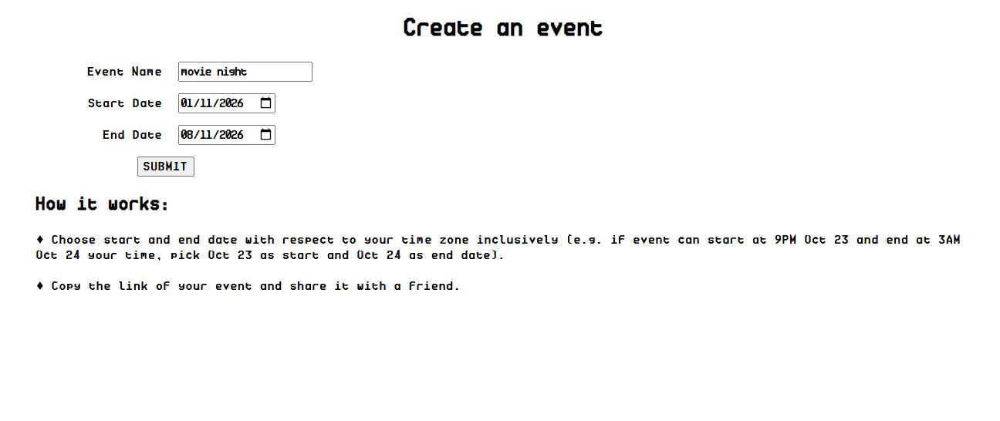
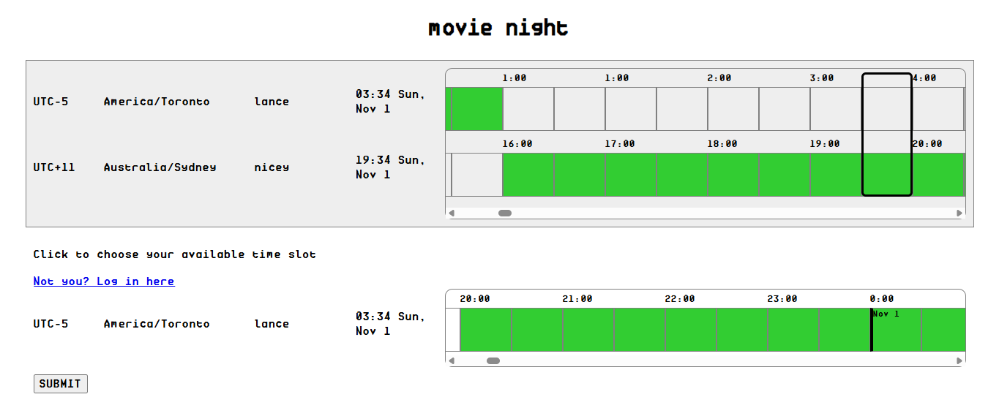

TZ Meetup
Try it out on the live working site.
I have multiple friend groups, and some of which consist of people from multiple timezones. One big issue we run into all the time is scheduling a movie night. What does this time correspond to at person A's timezone? If it works for A then how about B? If it doesn't work for B, we have to propose another time and the propose-vote cycle begins again.
I searched far and wide for a scheduling website or app that can work for our use case, but none of the results was right. Most scheduling services do not take timezones into consideration (the famous When2Meet, for example). If you search for cross-timezone scheduling, the results are services that tell you what the business hours in a timezone is so that "you can schedule your meeting" (timeanddate.com example, timezonewizard.com example), as if I can't just Google that up or remember the timezone offset, duh.
As the token tech friend of the group, I quickly realised that this is where my degree can actually be useful. I like to call this project "The Illegitimate Love Child of When2Meet and WorldTimeBuddy" (WorldTimeBuddy is my go-to site for timezone comparison). I adapted When2Meet's simple UI and login flow, and followed WorldTimeBuddy's highly intuitive layout.
This was no longer my first rodeo so I knew exactly what to do. The biggest design decisions are:
-
Where should data live (e.g. local SQLite, Supabase,...)?
- I've decided to go with Supabase mainly for its easily accesible UI, which is very useful for inspection during debugging.
-
What data should the system store (e.g. username, timezone info,
location,...)?
- Final Entity Relationship Diagram in my planning whiteboard.
-
How should the system treat event creation and login?
- System Sequence Diagram + Flow diagram with UI desgin in my planning whiteboard.
Forgive me for the messy whiteboard. I did plan to make it nicer and more readable, but on second thought I felt like leaving my notes as it is helps to show my brainstorming style and thinking process. I grew up learning with pen and papers, and fortunately that is how my thinking process works until today. Throughout university, all my notes were hand-written, prescibed readings are physically printed out, and so were worksheets. My first instinct at coding is to write pseudocode by hand on my mini whiteboard at home. I document project scopes, design decisions, and progress on notebooks. And I said "fortunately" because I truly feel fortunate to be able to experience education prior to the AI takeover, where everything was crude and simple but truly effective. This paper consolidates studies on typed vs hand-written lecture notes' effect on student achievement, showing that hand-written notes correlate with higher achievement.
I also tried typed notes for a whole 2 months before deciding that it was not for me, by the way.
After that, building, testing, and shipping are straightforward. I've treaded this path before.


Some note-worthy details about the system are:
-
Database schema:
- Event ID has UUID data type instead of serialised ID so that users cannot correctly guess another event's ID (e.g. If events are numbered increasingly from 1, it's as easy as querying eid=2 to see other events).
- All time info are converted to UTC timestamps before being stored. User's browser convert UTC timestamps to their local time for display.
-
Event and user behaviour:
- Once an event is created, it cannot be changed (name, start and end date). If the creator makes a mistake, they will have to create a new event.
- Similarly, once a user with a username and timezone information is created, it cannot be changed.
- User is created simply with an username and their timezone information, no password is needed. This does mean that knowing the username and timezone info is enough to make changes on a user's behalf. For a service with such a small scale, I think this is fine.
- Users are scoped to event only, meaning user "david" in event A is not connected to user "david" in event B.
-
Other design decisions:
- Event's start and end date are inclusive and local to event creator. e.g. if user select Oct 23 as start and Oct 24 as end date, the event will starts at 0:00 on the 23th, and in the system it will be whatever that timestamp is but in UTC.
- Each selectable slot corresponds to 30min.
- User info is stored in localStorage for convenience, but user can choose to log in with another (new) account.